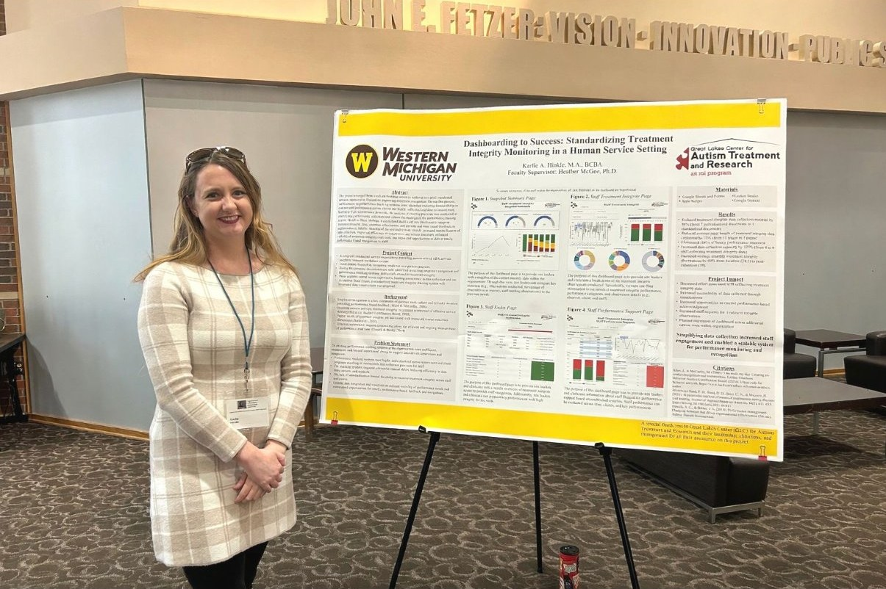

I find what's getting in your team's way, then fix it with clear roles, practical training, and simple data.
Training only fixes question 3. I find out which one is the real problem, then fix that.

Every project starts with a free 30-minute consult. The assessment has a fixed price. Everything after it is quoted based on what the assessment finds.
Get a quoteThe same role-play method I use with police works for front-line staff and managers. Your team practices real situations with customers and coworkers who have autism, gets coached, and gets measured.
Read the published studyUse it at your next training to check that staff saw the skill, practiced it, and got feedback.
I'll send it right away. After that, just a short note when I have something worth sharing.
A 30-minute call to understand what's going on and whether I can help. It's free.
Yes. My training is in organizational behavior management, which applies to any workplace where people need to learn a skill and keep using it.
An assessment usually takes about 30 days. Larger projects run 3 to 6 months, with weekly updates.
Yes. Projects are scoped to your size and budget.
Interviews and data review, yes. Training works best on-site.
We'll talk it through, and I'll tell you honestly whether a project makes sense.